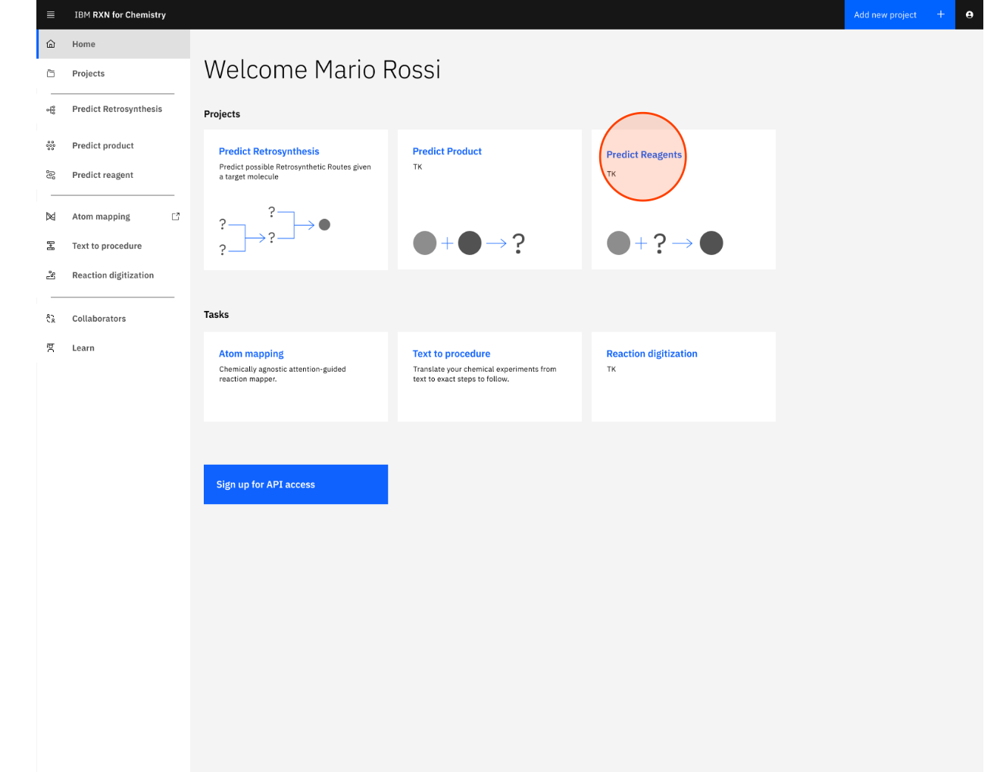
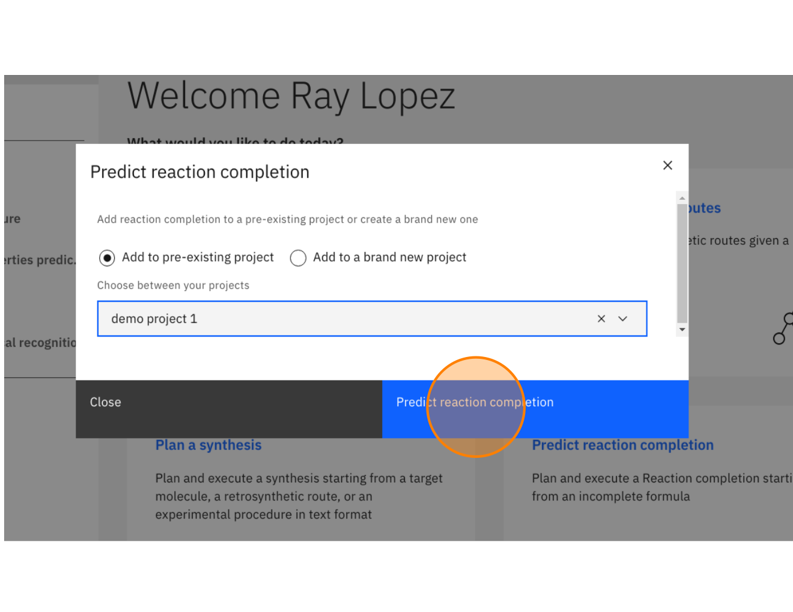
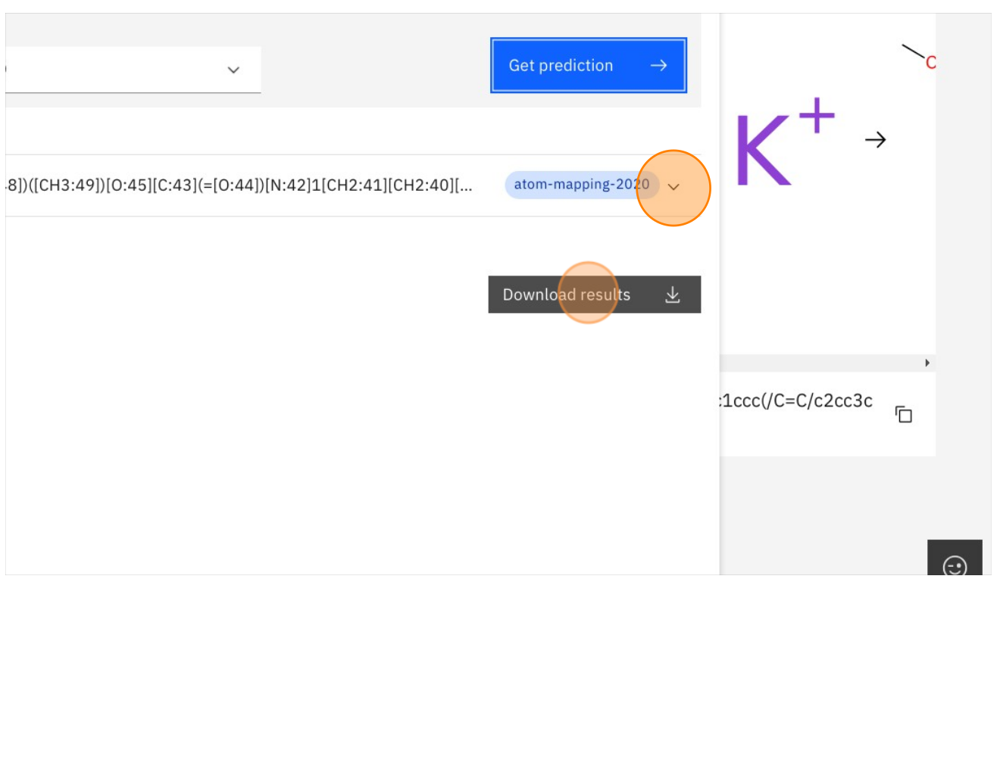

RXN for Chemistry - Predict reagents
This guide is a short tutorial to quickly learn how to use RXN for Chemistry predict reagents when starting with a partial set of known reagents and known end product.
Start Tutorial
| An account on a SaaS instance of RXN for Chemistry is required to complete this tutorial. |
|
Step 1: Log into RXN for Chemistry
| See our RXN for Chemistry Quick Start for directions on logging into the RXN for Chemistry system. |
Step 2: From the Home screen click "Predict reagents"

Step 3: Select "Add to pre-existing project" or "Add to a brand new project"
If selecting Add to pre-existing project then use the dropdown labeled "Filter" to select the project.

Step 4: Click "Predict reaction completion" (may also be labeled as "Predict reagents")

Step 5: On the next screen enter the SMILES strings for the known reactants or precursors.
| You may also use the Ketcher visual molecule editor by clicking on the link "Use Ketcher" above each text box. |
For the purposes of this tutorial you may use the following for a reagent:
C/C(C)=C/c1ccccc1

Step 6: Enter the SMILES strings for the product of the reaction in the second text box as shown below.
| You may also use the Ketcher visual molecule editor by clicking on the link "Use Ketcher" above each text box. |
For the purposes of this tutorial you may use the following for a product:
CC3(CN(CC3c4ccccc4)Cc5ccccc5)C

Step 7: Click the button "Complete reaction" to begin the analysis

Step 8: Click the button "Complete reaction" in the dialog box to run the analysis
| The best AI model is selected in the dropdown list but you may try others if available. |

Step 9: Upon completion the results will appear as shown below.
| Predicted reagents are outlined in green. |
| Use the controls to zoom in and out of the image. |

Step 10: After viewing your results, click "Generate more outcomes" to generate more potential products.
Results will be presented in a visual format as show below. You also have the option of downloading the results as a SMILES string or a PDF file of the molecular models.
| The process of generating the first result show below can take anywhere from a few seconds to a few minutes, depending upon the complexity of the reactions. |

Step 11: The newly predicted products may be viewed via the dropdown list labeled with the project name.
| The process of generating the first result show below can take anywhere from a few seconds to a few minutes, depending upon the complexity of the reactions. |

Step 12: After selecting a predicted reaction click the icon for Predict reaction properties in upper right
The icon for Predict reaction properties is shown below.
| The algorithms for predicting reaction properties take a representation of the reaction (Condensed Graph of Reaction, CGR) and use it as input to a graph-based convolutional neural network. See this article for an example of this approach: https://pubs.acs.org/doi/10.1021/acs.jcim.1c00975# |

Step 13: In the dialog box select "atom-mapping-2020" under "AI model" then click Get prediction

Step 14: Click on the the dropdown to view results or Download results to download to CSV

Step 15: Click on the TMAP icon as shown below
This will take you to a visual TMAP showing your retrosynthesis results in the context of other chemical structures and properties.
|
What is a TMAP? TMAP (TreeMAP) is a set of algorithms to help visualize high-dimensional data sets containing chemical structures. It provides the ability to visualize such data while preserving both global and local features with a sufficient level of detail to allow for human inspection and interpretation. For more information on TMAP see the following: |

Step 16: After reading the TMAP guidance, click "Continue with TMAP"

Step 17: Click on the +/- zoom icons to zoom in and out of TMAP
| The legend on the right hand side of the TMAP shows you the colors used to represent your reactions most closely related neighbors in the TMAP. |

Step 18: Click on the "X" in the upper right of the screen to close the TMAP
After you have finished exploring the TMAP close it to return to the reactions view.

Step 19: Click on the icon for "Similar reactions list" as shown below
The Similar reactions list will identify reactions in the RXN database that are similar to the predicted reaction.
Click the same icon again to close the Similar reactions list.

Step 20: Click on the icon for "Copy fingerprint" as shown below
The reaction fingerprint for the predicted product reaction will be copied to the clipboard of your browser. You may then paste it into a text document.
|
A unique "fingerprint" for a chemical reaction can be computed and used as a means to compare molecules and reactions for similarity. For more information on fingerprints as used here see the following: Mapping the space of chemical reactions using attention-based neural networks |

Step 21: Click on the icon for "Attention weights" as shown below
A small box will open with a heat map of attention weights calculated when the product prediction was derived.

| Right-click on the heat map and select "Open image in new tab" for a higher resolution view. |
|
The attention weight heat map is derived from the attention weights calculated while RXN is generating predictions. Attention weights reflect the molecular interactions in the reaction that were most critical when predicting the product (Y-axis of the heat map) from the reactants (X-axis of the heat map). The following article provides a simple overview of attention in machine learning models: Understanding Attention In Transformers Models |
Step 22: Click the "X" in the upper right to return to the RXN for Chemistry Home page

Step 23: Tutorial completed
This completes the Predict reagent tutorial for RXN for Chemistry.
In this tutorial we covered the following:
-
Executing a reagents prediction
-
Viewing the results in a Project
-
Viewing the details of the predicted reagent reactions
-
Viewing the TreeMAP, fingerprint, and attention heat map of the predicted reagent reactions
IBM, the IBM logo, and ibm.com® are trademarks or registered trademarks of IBM Corporation, registered in many jurisdictions worldwide. Other product and service names might be trademarks of IBM or other companies. A current list of IBM trademarks is available here: Copyright and Trademark Information.